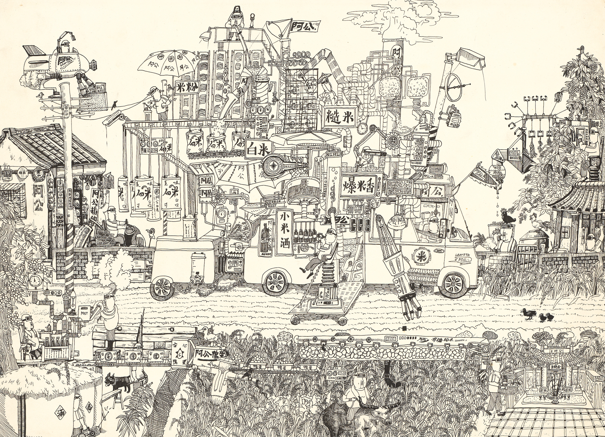
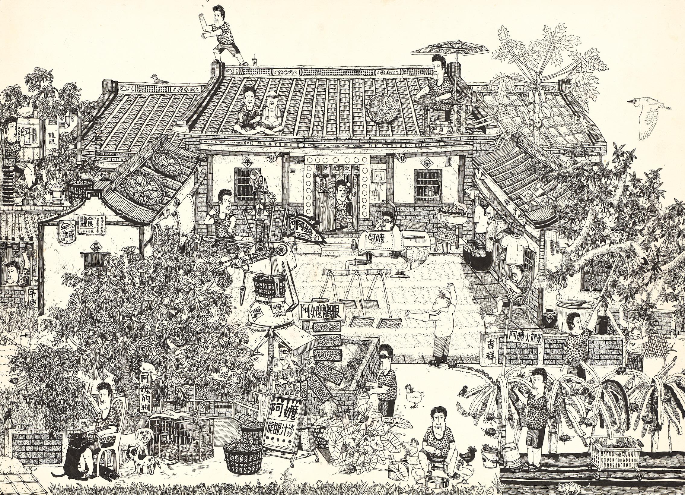
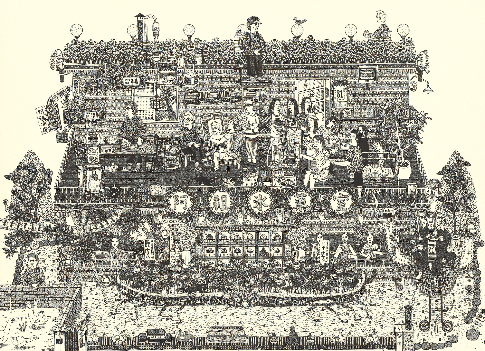

族譜系列

我的阿公是個農夫，他有一台發財車，載著他種的水果、蔬菜、米糧來來往往。我為這台車加上許多新功能，像是做爆米香、釀小米酒、製作米粉等等，這樣阿公就不用那麼辛苦下田了。

我的阿嬤是個農婦，這幅畫描繪她的日常起居，比方做龍眼乾、曬米、網土芒果。多年前創作時，對鄉村十分嚮往，時常有意將其浪漫化、美化，想像阿嬤的生活是多麼幸福靜好。

我的姐姐與兩個堂姐是好麻吉，她們仨小時候曾經夢想建造一個樹屋，可以久久住在一起，快樂地過日子。

阿祖年輕時曾推著車子賣剉冰，老年失智後，依然記得如何手製粉圓、粉粿等配料。原本想要像《阿公的發財車》那樣、將賣冰的推車加上許多奇特功能的機器；但在進行到20%時，阿祖便過世了，於意我改變原本的構想，換成一幢冰菓室紙紮屋。